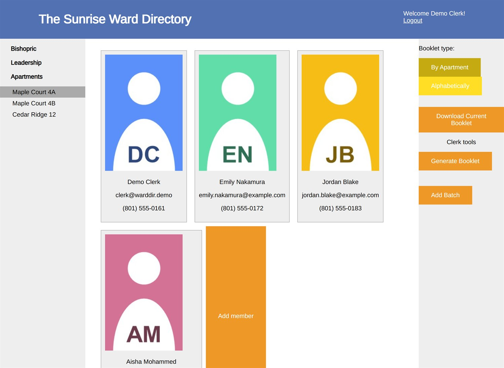
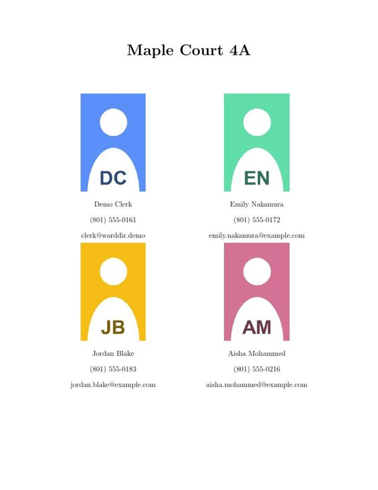

Congregation directory · print engine
A directory that prints its own booklet.
Browse a congregation by apartment on the web, then generate a typeset, print-ready PDF directory with one click — the booklet a clerk used to assemble by hand in PowerPoint.
Sign in with clerk@warddir.demo · demo1234

Why it exists
Built to replace a stack of text boxes.
The clerk before me assembled the congregation's printed directory by hand in PowerPoint, one text box at a time. I knew LaTeX, so I built something that does it properly: keep everyone's details in one place, and let the layout be generated rather than glued together.
It also fixes something the church's official software can't. Our congregation is young single adults, so no one is grouped into a family — and the official directory only knows how to look people up by family. This one orders everyone by apartment instead, so you can actually find who lives where.
From screen to print
One button, one typeset booklet.
Behind the download button is a LaTeX pipeline: member records are
poured into typeset templates, compiled with pdflatex,
and imposed two-up into a foldable booklet — ordered by apartment or
alphabetically.
Photos, names, and contact details land on the page automatically, so a fresh, print-ready directory is always one click away.

A generated apartment page — typeset, not pasted.
What's inside
A small app that does a few things well.
Grouped by apartment
Find who lives where, not who's related to whom — built for a congregation with no family units.
One-click booklet
LaTeX templates and pdflatex produce a print-ready PDF, by apartment or alphabetically.
Built-in photo editor
Crop and position member photos in the browser to a fixed print size, so pages always line up.
Roles & sign-in
JWT sessions with clerk and member permissions — clerks edit and generate, everyone browses.
Under the hood